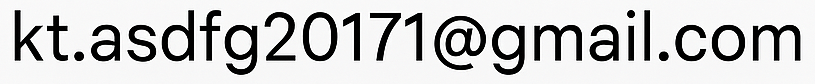

Questa app "PacketLoss & SpeedScan" può raccogliere e utilizzare determinate informazioni per migliorare l'esperienza utente e visualizzare annunci pubblicitari.
Questa app utilizza i seguenti servizi esterni:
All'avvio dell'app potrebbe apparire un popup di autorizzazione al tracciamento per scopi pubblicitari. Gli annunci personalizzati non verranno visualizzati senza l'autorizzazione dell'utente.
Questa app utilizza un tunnel VPN locale per la diagnostica di rete. Questo VPN non passa attraverso server esterni e tutta l'elaborazione avviene sul dispositivo.
Questa app offre acquisti in-app (abbonamenti). L'elaborazione dei pagamenti avviene tramite il sistema di pagamento dell'App Store di Apple e non raccogliamo né memorizziamo informazioni di pagamento (come numeri di carta di credito).
Per richieste, utilizzare il seguente modulo:
Per richieste relative alla privacy, contattaci al seguente indirizzo email:
Ultimo aggiornamento: 30 dicembre 2025